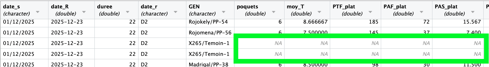

Antes de programar: 5 preguntas para un buen comienzo en el análisis de datos
Lanzarse directamente a programar en R sin un plan claro suele terminar en scripts desordenados y pérdida de tiempo, especialmente para quienes están empezando.
Por eso, un buen consejo es pensar con anticipación qué es lo que realmente necesitamos hacer y diseñar un flujo de trabajo (pipeline) sólido.
Antes de escribir una sola línea de código, hazte estas cinco preguntas esenciales para asegurar el éxito de tu análisis en R:
1. ¿Cuál es el problema exacto que intento resolver?
Suena extraño, pero a veces es mejor empezar por el final e intentar descubrir cuál es tu objetivo definitivo.
¿Estás describiendo tendencias pasadas, prediciendo resultados futuros o poniendo a prueba una hipótesis específica?
Definir tu objetivo principal determinará qué métodos estadísticos y qué paquetes de R vas a necesitar.
2. ¿Cómo se ven realmente mis datos crudos?
Lo sé, esto suena a-bu-rri-dí-si-mo, pero de verdad necesitamos revisar nuestros datos originales y tenerlos guardados en algún lugar (¡¡por favor, nunca los borres ni los sobrescribas!!) para poder volver a ellos más adelante si hace falta.
Algo muy importante, y que normalmente se olvida, es preguntarse de dónde vienen los datos: qué representa cada columna y qué información podría faltar.
En R, haz que funciones como summary() sean tus mejores amigas para descubrir detalles ocultos desde el principio.
3. ¿Cómo voy a manejar los valores faltantes y los datos atípicos?
Los datos del mundo real rara vez están limpios o, como nos gusta decir a los usuarios de R, ordenados (tidy).
Decide de antemano cómo vas a tratar los valores NA y los puntos extremos (outliers).

¿Los vas a filtrar y eliminar, los vas a imputar usando promedios o los vas a conservar porque contienen información valiosa?
Documentar esta decisión evita sesgos más adelante en el análisis.
4. ¿Qué variables importan realmente?
Tener más datos no siempre significa obtener mejores resultados.
Identifica tu variable objetivo (lo que quieres explicar) y tus variables predictoras (lo que podría explicarlo).
Esto te ayudará a evitar complejidades innecesarias y mantendrá tus scripts de R rápidos y fáciles de leer.
5. ¿Cómo voy a comunicar los resultados finales?
Piensa en tu audiencia.
Un equipo técnico probablemente querrá ver los resultados de las pruebas estadísticas y los valores p (p-values), mientras que los directivos o clientes preferirán gráficos claros.
Saber esto desde el inicio te ayudará a diseñar visualizaciones limpias con ggplot2 o un reporte automatizado en Quarto desde el primer momento.
¡Un gran análisis de datos es 80 % preparación y 20 % ejecución!
Al responder estas cinco preguntas primero, tu código en R será más limpio, más rápido y mucho más fácil de reproducir.
¿Quieres apoyo personalizado para resolver tus propias dudas y avanzar con tus análisis?
Ofrezco capacitaciones y asesorías individuales (1 a 1) en R o Python y análisis de datos, adaptadas a tus propios datos y objetivos.
¡Ponte en contacto conmigo para planificar una sesión!